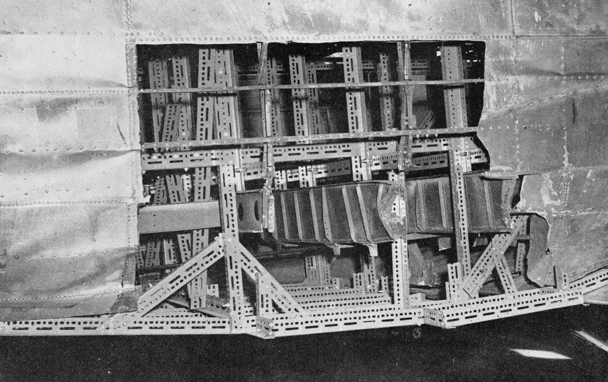
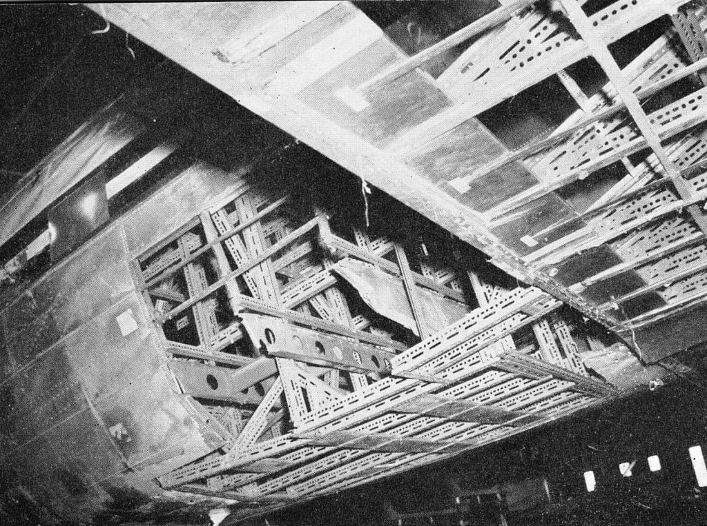
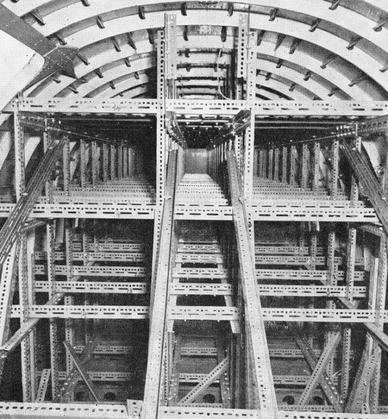
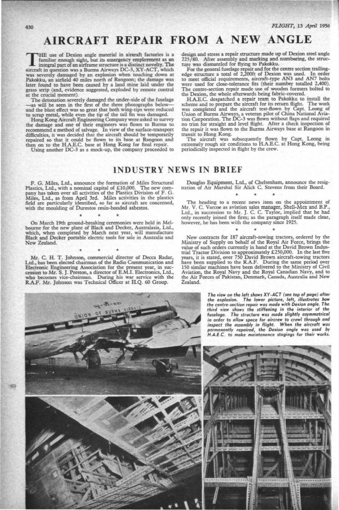

လွတ်လပ်ရေး ရပြီးစအချိန် မြန်မာနိုင်ငံမှာ ရောင်စုံသူပုန်တွေ အားကောင်နချိန် ၁၉၅၆ ခုနှစ်မှာ မြန်မာ့လေကြောင်း Union of Burma Airway (UBA) ပိုင် Dakota (Douglas DC-3) ခရီးသည် တင်လေယာဉ် ဟာ ပခုက္ကူ လေဆိပ်သို့ ဆင်းသက်စဉ် ကွန်မြူနစ် သူပုန်တွေ ထောင်ထားတဲ့ မြေမြှုပ်မိုင်း နင်းမိပြီး အတော် ပျက်စီး သွားခဲ့ ပါတယ်။
လေယာဉ် ပြန်ပြင်ရန် UBA ဟာ ဟောင်ကောင်နိုင်ငံ မှ The Hong Kong Aircraft Engineering Co. Ltd သို့ ကန်ထရိုက် ပေးခဲ့ ပါတယ်။
၎င်းကုမ္ပဏီ မှ အင်ဂျင်နီယာ များဟာ ပခုက္ကူ သို့ရောက်လာ ပြီးလေယာဉ် ကိုစစ်ဆေးကြ ပါတယ်။ အင်ဂျင်နီယာ များဟာ slotted angle iron များနဲ့ လေယာဉ် ကို ခိုင်ခန့်အောင် ယာယီ ထိန်းချုပ်ပြီး လေယာဉ်ကို ဟောင်ကောင် သို့ မောင်းယူ သွားဖို့ ဆုံးဖြတ် ခဲ့ပါတယ်။ အင်ဂျင်နီယာ များဟာ လိုအပ်တဲ့ အတိုင်းအတာ များကိုယူ ပြီး ဟောင်ကောင်ကို ပြန်သွားကြ ပါတယ်။

လေယာဉ်ဝမ်းဗိုက်က အပေါက်ကို ဒီလိုအားကောင်းအောင် လုပ်ယူတယ်
ကိုယ်ထည်ကိုလဲ ဒီလိုအားကောင်အောင် ထောက်တွေလိုက်ထောက်တယ်
လေယာဉ်ကိုယ်ထည်ထဲမှာ Slotted angle iron သံချောင်းထောက်တွေနဲ့ ထောက်ထားပုံဟောင်ကောင် ပြန်ရောက်တော့ slotted angle iron များ ကို အဆင်သင့် ဖြတ်တောက်ပြီး ပခုက္ကူ သို့ ပြန်သယ် လာခဲ့ကြ ပါတယ်။ slotted angle iron များကို လေယာဉ် တွင်းမှာ ဆင်ပြီး အပေါက် တွေကို အလျူမီနီယံ ပြားတွေနဲ့ ပိတ်ဆို့၍ လေယာဉ်ကို ရန်ကုန် မှတဆင့် ဟောင်ကောင်သို့ မောင်းယူ သွားခဲ့ ပါတယ်။
ဟောင်ကောင်မှာ လေယာဉ်ကို ပြန်လည် ပြင်ဆင်ပြီး UBA သို့ ပြန်လည် အပ်နှံ ခဲပါတယ်။

ဒီသတင်းကို ဖေါ်ပြခဲ့တဲ့ ၁၉၅၆ ခုနှစ်ထုတ် Flight Global မဂ္ဂဇင်း